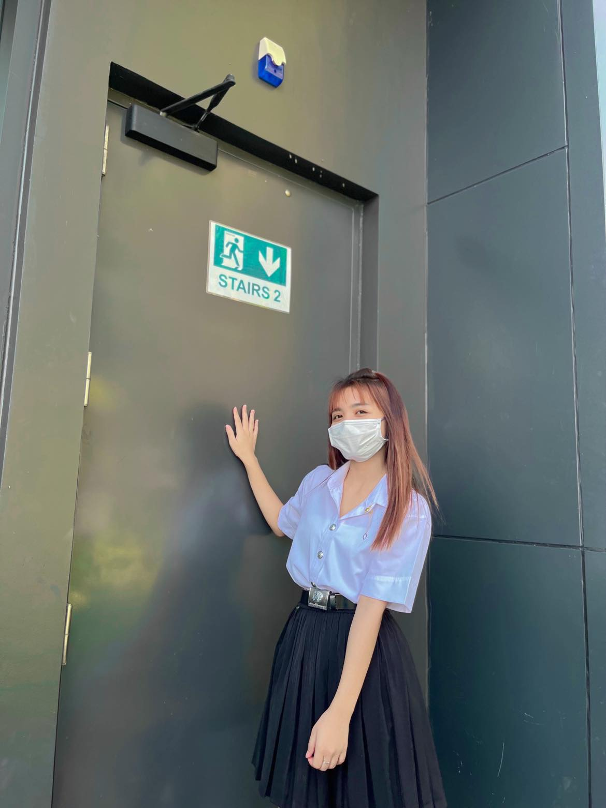

Nattha Kaewngam

Summary
I love leaining about programming and the future world.
Education
- Thitiwittaya School (2006 - 2015)
- Thamaka Wittayakom School (2013 - 2016)
- Kanchanaburi industrial and community education college (2017 - 2020)
- Rajamagala University Of Technology Krungthep (2021 - present)
Work Experience
- Favorite Glass Cafe
- Customer Service Representative
- KAWEW Sovenir Shop
- Customer Service & Sales Officer
- THAI HA Public Company
- Pre-production inspection staff
Write a data report
Skills
- Read English ⭐⭐⭐⭐
- Listen to Korean ⭐⭐
- JavaScript: ⭐️⭐️
- HTML/CSS: ⭐️
Awards and Certification
- Certificate of study in finance courses
- Certificate of study in digital Marketting
Other
@Nattha kaewngam.All rights reserved.